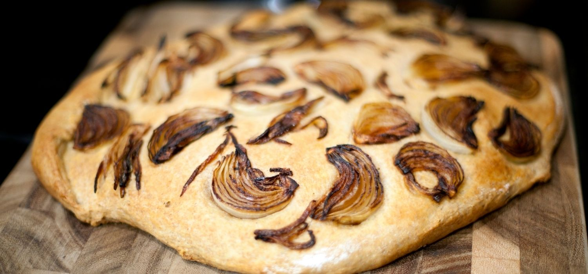

PANCITOS CEBOLLA
Ingredientes
- 1 CEBOLLA picada
- 300 gr HARINA
- 1 HUEVO
- 2 cda ACEITE
- 1 cdita SAL
- 1 cda MIEL
- 100 l AGUA tibia
- 25gr LEVADURA fresca o 10gr seca/instantanea
Procedimiento
Colocar la harina en un bowl y hacer un huequito en el centro y colocar la sal por el borde.
Colocar en el centro del hueco la levadura (recomiendo usar fresca), el aceite, el huevo, la miel y
comenzar a agregar agua lentamente e ir integrando con tenedor.
Se forma un bollo blando y pegajoso. Agregar la cebolla cortadita.
Separar el bollo en bollitos y colocar en una placa aceitada y con las manos humedecidas le damos
forma.
Dejar descansar en un lugar calentito 30 minutos.
Llevar a horno precalentado 180 grados por 20 minutos.
Al sacar del horno comer calientes o dejar enfriar sobre una rejilla (si los dejas sobre un plato se
humedecen)